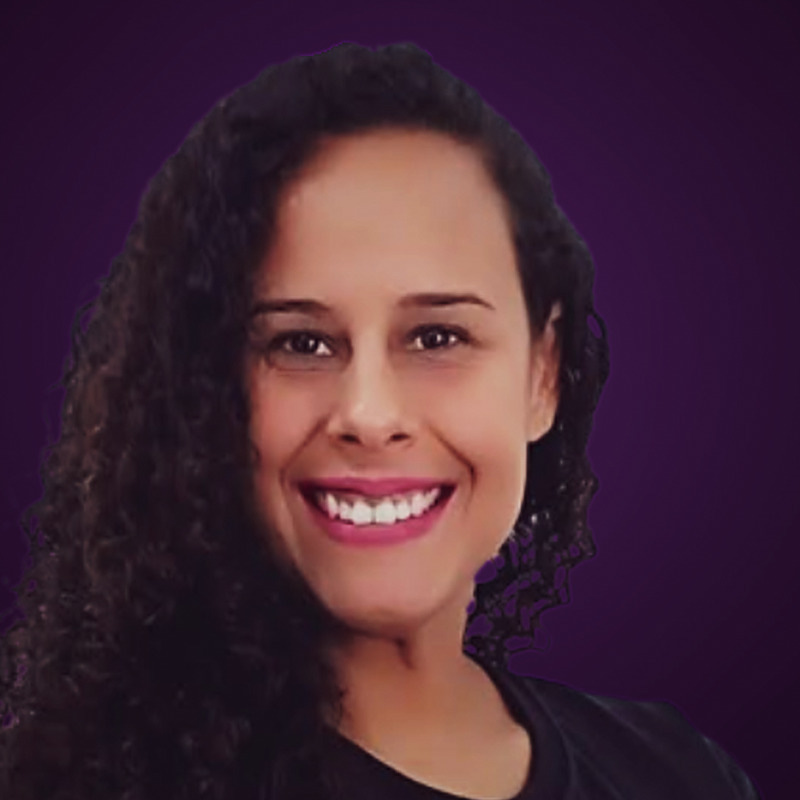
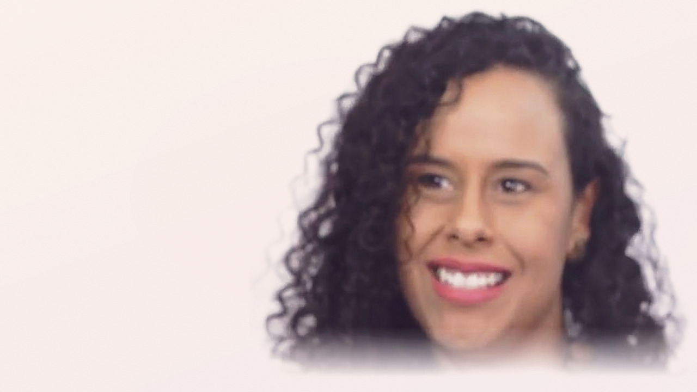

Logo principal
O seu nome é o que as alunas procuram no Google, então o logo é o próprio nome em serifa, com o “O” de Oliveira em itálico como assinatura. As iniciais ainda não significam nada fora do TikTok.
Creme sobre ameixa, roxo sobre creme e a versão do salão. Arquivos: logo-wordmark-claro.svg, -escuro.svg e -salao.svg (as fontes vêm do Google; o texto não está em curvas).
Monograma e selo
O JO em arco é a marca de apoio: favicon, marca d’água, capas de destaque. O selo Fios & Flash é opcional, só um carimbo de endosso e não um logo novo.
Monograma A (logo-monograma.svg)
Selo opcional (selo-fios-flash.svg)
Avatar das redes
No avatar vai a sua foto, não o logo: pessoa segue pessoa, e um logo com texto some a 110 px. O aro dourado fino dá o acabamento. O monograma fica de avatar da escola.

Banner do YouTube
O nome em creme sobre ameixa fica no centro, dentro da área segura que aparece em todos os aparelhos. A chamada para o curso vai logo abaixo, e os raminhos ficam nas laterais, que só a TV mostra por inteiro.
Simulação aproximada de como o YouTube recorta o banner em cada tela.
Miniaturas 1280×720
Três formatos, cada um com cor e etiqueta fixas: quem rola a página reconhece a série antes de ler. Até 3 palavras, para ler até a 168 px. Os títulos são exemplos tirados dos temas do seu canal.

CORTE PASSO A PASSOChanel perfeito

 ERRO DE INICIANTE
ERRO DE INICIANTEÁgua quente?
 AULA ABERTA
AULA ABERTATeste de leitura (168×94)
Chanel perfeito
ERRO DE INICIANTEÁgua quente?
AULA ABERTAComo a série apareceria
Chanel perfeito
Chanel perfeito: o corte passo a passo
Juliana OliveiraERRO DE INICIANTEÁgua quente?
Água quente no cabelo: pode ou não?
Juliana OliveiraAULA ABERTAAula aberta: progressiva sem formol?
Juliana OliveiraERRO DE INICIANTEÁgua quente?
Água quente no cabelo: o erro mais comum
Juliana OliveiraAULA ABERTAAula aberta: corte Chanel do zero
Juliana OliveiraChanel perfeito
Chanel perfeito: dicas de finalização
Juliana OliveiraLista fictícia com as 3 miniaturas repetidas. Os títulos são só para ilustrar. “Progressiva sem formol?” é uma pergunta sua e precisa ser confirmada.